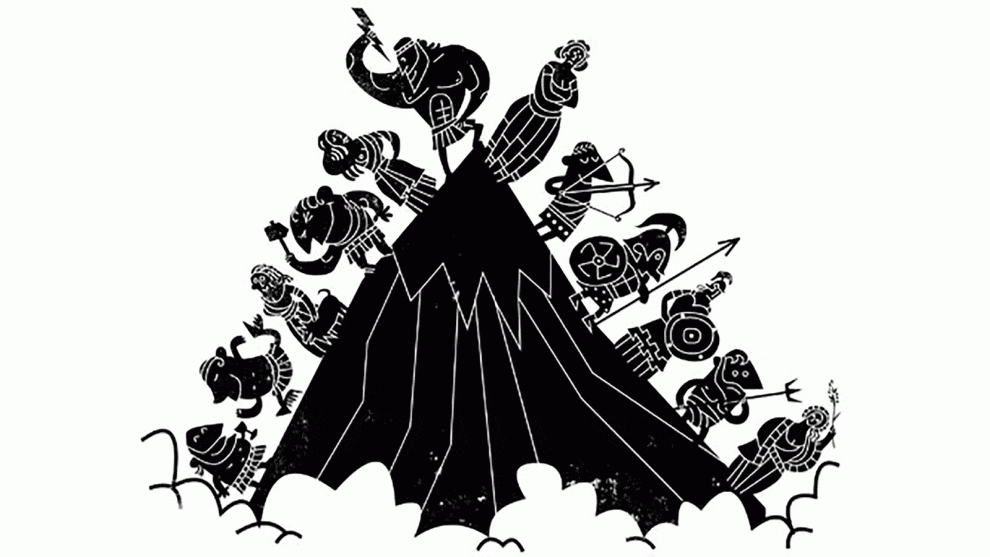

Modernizing Myths from Ancient Greece
Grades 5-7, 90-120min
In the Modernizing Greek Myths lesson, students read and summarize a classic myth from Ancient Greece. Working in teams, they then brainstorm ways to bring that myth into the modern age. Teams write three minute plays based on their modern ideas, performing their work in front of the class to complete the project. The source myths for this activity were written by Lin Donn, and the King Midas radio play embedded in the PowerPoint presentation was created by the BBC.
Topics addressed
- Cultural and religious significance of Ancient Greek myths
- Primary CT concept: abstraction. Students identify the central theme and/or moral from their myth and create an entirely new story that symbolizes the same tenet.
Students will be able to
- Identify the central theme and moral of a specific Greek myth
- Write and perform a modern adaptation of a Greek myth of their choosing
Materials
-
Slides:


-
Student worksheet:


-
Original myths:
- King Midas and the Golden Touch radio play
- Lined paper for students to write their short plays
Prep
- Print enough copies of each original myth such that teams will have at least a few options to choose from
Suggested lesson breakdown
This activity can be run in one longer period, or split over two shorter periods.
- 2min – activity introduction with PowerPoint presentation
- 15min – class listens to King Midas myth radio play
- 5min – finish introducing activity with PowerPoint presentation
- 15min – teams of three students read and summarize their selected Greek myth
- 30-60min – teams write their modern adaptations in play form
- 20-30min – teams present their plays to the class
Washington State standards
-
WA.SS.6.4.2.2
Understands and analyzes how cultures and cultural groups in ancient civilizations contributed to world history. -
WA.SS.6.3.3.2
Understands the characteristics of cultures in the world from the past or in the present.